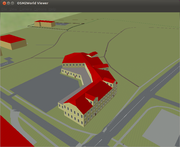

OSM2World
Dieser Artikel wurde für die folgenden Ubuntu-Versionen getestet:
Ubuntu 14.04 Trusty Tahr
Zum Verständnis dieses Artikels sind folgende Seiten hilfreich:
OSM2World  ist ein 3D-Tool um in OSM (Open Street Map, einer freien, globalen und kooperativ entwickelten Kartensammlung) zu arbeiten, ebenso ermöglicht es die Ansicht der OSM-Karte im 3D-Modus.
Hier kann man einen Blick in die OSM-3D-Karte werfen: OSM in 3D
ist ein 3D-Tool um in OSM (Open Street Map, einer freien, globalen und kooperativ entwickelten Kartensammlung) zu arbeiten, ebenso ermöglicht es die Ansicht der OSM-Karte im 3D-Modus.
Hier kann man einen Blick in die OSM-3D-Karte werfen: OSM in 3D
Die Dokumentation dazu ist auch im OSM-Wiki zu finden: OSM2World
Die Karte wird alle 5-10 Tage aktualisiert.
Installation¶
OSM2World ist nicht in den Paketquellen enthalten, daher ist eine manuelle Installation erforderlich. Des weiteren ist Java[6] erforderlich.
Das Programm wird regelmäßig erneuert, daher bietet sich die Installation im Homeverzeichnis an. Somit sind nicht ständig Root-Rechte erforderlich.
Als erstes im Homeverzeichnis ein weiteres Verzeichnis OSM2World anlegen. Nun auf der OSM2World Seite, die Dateien latest build, im weiteren Verlauf die Datei OSM2World-latest-bin.zip und die example texture selection in das Verzeichnis Downloads herunterladen.
Nun beide Dateien nach OSM2World entpacken.
Bedienung¶
In das Verzeichnis OSM2World mit folgendem Befehl[3] wechseln:
cd OSM2World
Im Verzeichnis das Programm mit folgendem Befehl[3] starten:
./osm2world.sh --config texture_config.properties --gui
Beispiele¶
In OSM2World können mit JOSM neu erstellte 3D Gebäude angesehen werden, bevor man die Daten nach OSM hochlädt!
Wenn mit JOSM ein Gebäude bearbeitet wird, den bearbeiteten Bereich lokal speichern. Im Beispiel einmal unter Dokumente/Data.osm
Nun in OSM2World mit einem  auf View die Datei Data.osm öffnen. Das Programm JOSM muss dabei nicht geschlossen sein.
auf View die Datei Data.osm öffnen. Das Programm JOSM muss dabei nicht geschlossen sein.
Die Datei wird jetzt geöffnet und das gute/schlechte Ergebnis der Eintragung ist zu sehen. Danach sollte sich richten ob die Daten nach OSM hochgeladen werden.
Nur gute und entsprechend schön gewordene Eintragungen hochladen.  Beispiel:
Eintragung eines Wohn- und Geschäftshauses mit Dachterrasse. Die Darstellung wird sich ständig verbessern.
Nach Änderungen in JOSM einfach wieder lokal speichern und mit der in OSM2World auf "Reload OSM file" klicken und die Änderung wird sofort nachgeladen.
Links¶
intern¶
OpenStreetMap - freie Weltkarte
Programme - Editoren, Konverter ...
JOSM - Java-OpenStreetMap-Editor

- Erstellt mit Inyoka
-
 2004 – 2017 ubuntuusers.de • Einige Rechte vorbehalten
2004 – 2017 ubuntuusers.de • Einige Rechte vorbehalten
Lizenz • Kontakt • Datenschutz • Impressum • Serverstatus -
Serverhousing gespendet von